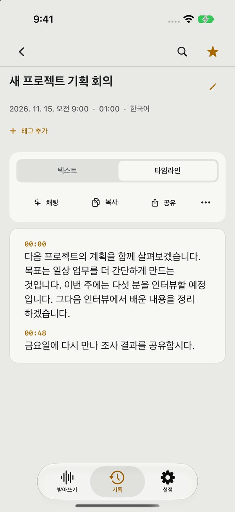
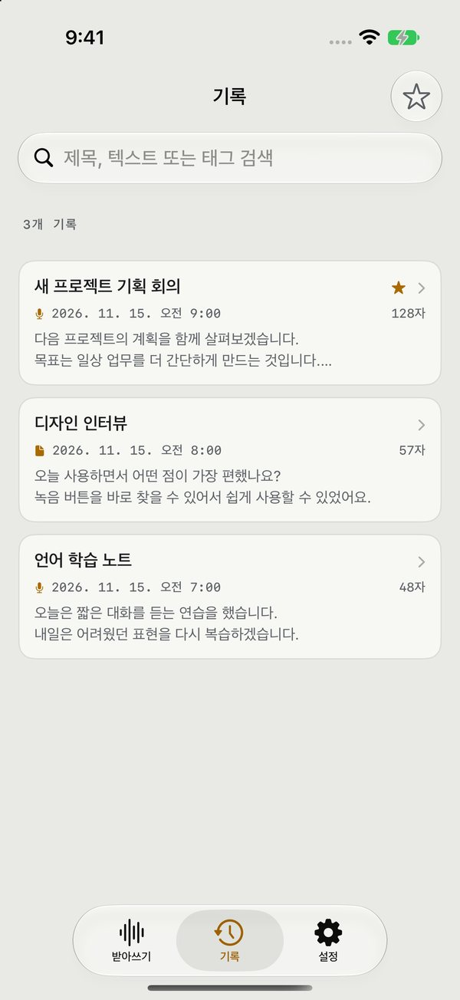
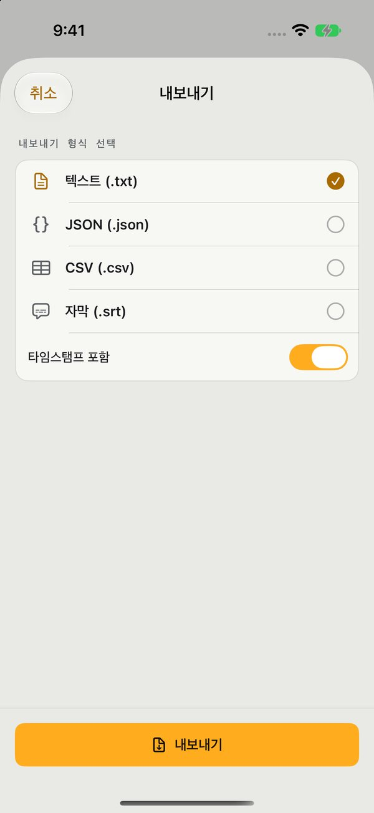

목소리를,텍스트로 바꾸세요.
회의, 강의, 인터뷰를 녹음하거나 오디오·동영상 파일을 가져오면 iPhone 또는 iPad에서 텍스트 변환 결과를 얻을 수 있습니다.
지원되는 iOS 26 이상 기기에서 녹음 중 실시간으로 텍스트를 표시합니다. Apple Intelligence가 활성화되어 있으면 기록 채팅에서 AI 요약을 요청할 수 있습니다.
- 모든 기능 무료
- 광고 없음
- 인앱 구매 없음
- 계정 불필요
- iPhone & iPad
모든 기능, 무료.
유료 요금제는 없습니다. 이 페이지에 소개된 모든 기능(녹음, 파일 가져오기, 모든 Whisper 모델, 내보내기, 기록, 태그, Apple Intelligence 채팅, 단축어)을 비용 없이 이용할 수 있습니다. 계정을 만들 필요가 없고, 앱에 광고도 표시되지 않습니다.
- 구독이나 일회성 구매 없음
- 인앱 구매나 잠긴 기능 없음
- 광고와 타사 추적 없음
- 가입이나 로그인 없음
- 녹음 길이와 파일 개수에 앱이 두는 제한 없음 — 기기의 저장 공간, 메모리, 배터리 조건은 그대로 적용됩니다
음성을 텍스트로 변환하는 방법
녹음하거나 가져오기
탭 한 번으로 마이크 녹음을 시작하거나, 파일 앱 또는 사진에서 오디오·동영상 파일을 선택하세요. 녹음 중에는 일시 정지와 재개가 가능합니다.
읽고, 고치고, 내보내기
타임스탬프와 함께 텍스트를 확인하고 틀린 부분을 고친 뒤 TXT, CSV, JSON 또는 SRT 자막으로 공유하세요.
이 앱으로 할 수 있는 일
앱의 주요 부분을 자세히 살펴보세요.
녹음하거나 원하는 파일을 가져오세요
탭 한 번으로 녹음을 시작하거나 이미 가지고 있는 파일을 가져올 수 있습니다. 앱이 오디오를 변환한 뒤 기기에서 텍스트 변환을 실행합니다.
- 일시 정지와 재개가 가능한 마이크 녹음, 외부 마이크를 위한 마이크 전환
- 실시간 활동으로 잠금 화면과 Dynamic Island에 녹음 상태 표시(지원되는 iPhone)
- 파일 앱에서 M4A, WAV, MP3, MP4, MOV 등의 오디오·동영상 가져오기
- 사진 보관함에서 동영상을 바로 선택
- 긴 세션을 위한 선택적 "화면 켜짐 유지"
기기에서 실행되는 Whisper
앱은 OpenAI가 공개한 Whisper 모델을 whisper.cpp를 통해 사용하며, 지원되는 경우 Metal GPU 가속을 활용합니다. 다른 모델을 선택해 속도와 정확도 사이의 균형을 조절할 수 있습니다.
- Tiny(약 15 MB)부터 Large v3 Turbo와 Medium(최대 약 1.5 GB)까지 10가지 Whisper 모델
- 자동 언어 감지 또는 18개 언어 중 선택
- 결과를 영어로 번역하는 선택 기능
- 지원되는 기기에서 처리를 빠르게 할 수 있는 Core ML 인코더 선택 다운로드
- iOS 26 이상에서는 Apple의 온디바이스 음성 엔진도 대안으로 사용할 수 있습니다

타임라인 또는 읽기 보기
깔끔한 텍스트 보기와 타임스탬프가 있는 타임라인을 전환할 수 있습니다. 원본 오디오를 재생해 무슨 말이 있었는지 확인하고 필요할 때 텍스트를 수정하세요.
- 텍스트 보기와 타임라인 보기, 선택적 타임스탬프
- 재생 속도와 위치를 조절할 수 있는 오디오 재생
- 텍스트 변환 결과와 제목 편집
- 문단 하나 또는 전체 텍스트 복사
- 텍스트 변환 결과 안에서 검색

검색할 수 있는 기록
모든 텍스트 변환 결과는 기기에 저장되어 나중에 다시 확인할 수 있습니다.
- 제목, 텍스트, 태그로 검색
- 즐겨찾기와 정렬
- 모든 텍스트 변환 결과에 적용되는 태그 추가, 이름 변경, 병합, 삭제
- 태그로 기록 필터링

텍스트, 데이터 또는 자막
메모, 스프레드시트, 스크립트, 동영상 편집기 등 다음 단계에 맞는 형식으로 텍스트 변환 결과를 공유하세요.
- 메모와 문서용 TXT
- 스프레드시트용 CSV
- 나만의 도구를 위한 세그먼트 포함 JSON
- 동영상 편집용 SRT 자막
- 원본 녹음을 오디오 파일로 공유
텍스트 변환 결과에 대해 질문하기 iOS 26+
Apple Intelligence를 지원하는 기기에서는 텍스트 변환 결과와 채팅하며 요약, 주요 결정 사항, 실행 항목을 요청하고 제목을 생성할 수 있습니다. 채팅은 텍스트 변환 결과별로 저장됩니다. 긴 텍스트 변환 결과는 섹션 단위로 읽습니다. 선택 사항인 Private Cloud Compute 모드(iOS 27 이상)는 기본적으로 꺼져 있습니다.
단축어 & 시리
앱 단축어를 사용해 녹음을 시작하거나 중지하고, 미디어 파일을 텍스트 변환하고, 텍스트 변환 결과를 찾고, 텍스트 변환 결과의 텍스트를 가져오거나 태그와 즐겨찾기를 추가할 수 있습니다. 자동화에 유용합니다. 일부 동작은 최신 버전의 iOS가 필요합니다.
모든 기능 — 모두 무료
현재 앱이 제공하는 기능 전체 목록입니다. 어떤 기능도 구매가 필요하지 않습니다.
녹음
- 마이크 녹음무료
- 녹음 일시 정지 & 재개통화 같은 중단 상황도 처리무료
- 마이크 전환무료
- 녹음 중 실시간 활동잠금 화면 및 Dynamic Island무료
- 오디오 파일 가져오기M4A, WAV, MP3 및 기타 일반 형식무료
- 동영상 파일 가져오기MP4, MOV 및 기타 일반 형식무료
- 사진에서 동영상 가져오기무료
- 실시간 전사말하는 대로 텍스트 표시 · iOS 26+무료
음성 인식
- 기기 내 Whisper (whisper.cpp)무료
- 10가지 Whisper 모델 전체Tiny, Base, Small, Medium, Large v3 Turbo 및 소형 변형무료
- Apple 온디바이스 음성 엔진iOS 26+, 언어는 iOS가 관리무료
- 자동 감지 또는 18개 언어 선택무료
- 영어로 번역무료
- Metal GPU 가속기기가 지원하는 경우무료
- Core ML 인코더(선택 다운로드)무료
정확도 & 성능 도구
- 무음 구간 건너뛰기음성 활동 감지(VAD)무료
- 오디오 정리노이즈 감소 및 볼륨 정규화무료
- 어휘 힌트모델이 예상해야 할 이름과 용어무료
- Flash Attention메모리 사용을 줄이고 처리를 빠르게 할 수 있음무료
- 타임스탬프 포함무료
읽기 & 편집
- 텍스트 보기 및 타임라인 보기무료
- 속도 조절이 가능한 오디오 재생무료
- 텍스트 변환 결과 텍스트와 제목 편집무료
- 문단 또는 전체 텍스트 복사무료
- 텍스트 변환 결과 안에서 검색무료
기록 & 정리
- 저장되는 텍스트 변환 기록무료
- 제목, 텍스트, 태그로 검색무료
- 즐겨찾기 및 정렬무료
- 태그: 추가, 이름 변경, 병합, 삭제무료
- 태그로 필터링무료
내보내기 & 공유
- 텍스트(.txt)무료
- CSV(.csv)무료
- JSON(.json)무료
- 자막(.srt)무료
- 원본 오디오 공유무료
- 공유 시트로 텍스트 공유무료
Apple Intelligence
- 텍스트 변환 결과에 대해 채팅지원되는 기기의 iOS 26+무료
- 텍스트 변환 결과별 채팅 기록 저장무료
- 제목 생성무료
- Private Cloud Compute 모드선택 사항 · iOS 27+ · 기본적으로 꺼짐무료
자동화 & 앱
- 단축어 & 시리 동작무료
- iPhone 및 iPad 레이아웃무료
- 라이트, 다크 또는 시스템 화면 모드무료
- 11개 언어 인터페이스무료
- 모델 및 저장 공간 관리무료
iOS 버전이 표시된 기능은 해당 버전 이상이 필요합니다. Apple Intelligence 기능은 기기 지원 여부, 지역 및 언어 설정에 따라 달라질 수 있습니다.
오디오를 기기에 남겨 두도록 설계했습니다
Whisper 텍스트 변환은 기기에서 실행됩니다. 앱에는 광고, 분석 SDK, 타사 추적이 없으며, 오디오나 텍스트 변환 결과를 개발자에게 전송하지 않습니다.
기기에 그대로 남습니다
녹음, 가져온 미디어, 텍스트 변환 결과, 태그, 채팅, 설정은 기기의 앱 안에 저장됩니다. 언제든지 앱에서 삭제할 수 있습니다.
앱이 연결되는 경우
Hugging Face에서 Whisper, VAD, Core ML 모델 파일을 다운로드할 때, App Store에서 새 버전을 확인할 때, 그리고 iOS가 Apple 엔진용 음성 모델을 다운로드할 때입니다.
선택은 여러분이
Apple Intelligence용 Private Cloud Compute는 기본적으로 꺼져 있습니다. 켜면 텍스트 변환 텍스트와 질문이 Apple의 Private Cloud Compute에서 처리됩니다. 내보낸 항목을 공유하면 선택한 대상으로 전송됩니다.
시작하기 전에
기기 & 시스템
iOS / iPadOS 17.0 이상이 설치된 iPhone 또는 iPad. 실시간 전사, Apple 음성 엔진, 기기 내 Apple Intelligence는 iOS 26 이상이 필요하고, Private Cloud Compute는 iOS 27 이상이 필요합니다.
저장 공간 & 네트워크
모델을 다운로드하려면 인터넷 연결과 여유 저장 공간이 필요합니다(모델에 따라 약 15 MB~1.5 GB). 녹음에는 마이크 권한이 필요합니다.
자주 묻는 질문
앱이 정말 무료인가요?
네. 현재 모든 기능을 무료로 사용할 수 있습니다. 광고, 인앱 구매, 구독, 계정 가입이 없습니다.
오프라인에서도 작동하나요?
Whisper 텍스트 변환은 기기에서 실행되도록 설계되었습니다. 모델을 다운로드할 때 한 번 인터넷 연결이 필요하며, 그 후에는 해당 모델로 녹음과 텍스트 변환을 보통 연결 없이 할 수 있습니다. 다른 모델 다운로드, 업데이트 확인, 선택 사항인 Private Cloud Compute 모드에는 연결이 필요합니다.
제 오디오가 서버로 전송되나요?
Whisper 텍스트 변환은 기기에서 실행되며, 앱은 오디오나 텍스트 변환 결과를 개발자에게 전송하지 않습니다. 사용자가 직접 선택하는 유일한 예외는 Apple Intelligence 채팅용 Private Cloud Compute 모드로, 이 경우 텍스트 변환 텍스트와 질문이 Apple의 Private Cloud Compute로 전송됩니다. 이 모드는 기본적으로 꺼져 있습니다.
어떤 파일을 가져오고 내보낼 수 있나요?
파일 앱에서 M4A, WAV, MP3, MP4, MOV 같은 일반적인 오디오·동영상 형식을 가져오고, 사진에서 동영상을 가져올 수 있습니다. 텍스트 변환 결과는 TXT, CSV, JSON, SRT로 내보낼 수 있으며, 녹음은 오디오 파일로 공유할 수 있습니다.
어떤 언어를 지원하나요?
텍스트 변환에는 자동 감지를 사용하거나 영어, 일본어, 중국어, 한국어, 스페인어, 프랑스어, 독일어, 이탈리아어, 포르투갈어, 러시아어, 아랍어, 힌디어, 네덜란드어, 폴란드어, 터키어, 베트남어, 태국어, 인도네시아어 중에서 선택할 수 있습니다. 결과는 언어에 따라 다를 수 있습니다. 앱 인터페이스는 11개 언어로 제공됩니다.
동영상 자막을 만들 수 있나요?
네. 동영상을 가져와 텍스트 변환한 뒤 SRT로 내보내면 됩니다. 대부분의 동영상 편집기에서 SRT 파일을 가져올 수 있습니다. 자막 타이밍은 인식된 세그먼트를 따르므로 편집기에서 조정하는 것이 좋습니다.
녹음은 얼마나 길게 할 수 있나요?
앱이 고정된 제한을 두지는 않습니다. 실제로는 기기의 여유 저장 공간, 메모리, 배터리에 따라 달라지며, 큰 모델일수록 시간이 더 걸립니다. 긴 파일이 실패한다면 더 작은 모델이나 Flash Attention이 도움이 될 수 있습니다.
공식 OpenAI 앱인가요?
아니요. 이 앱은 오픈소스 whisper.cpp 프로젝트를 통해 OpenAI가 공개한 Whisper 모델을 실행하는 독립 앱입니다. OpenAI와 제휴하거나 OpenAI의 승인을 받은 앱이 아닙니다.